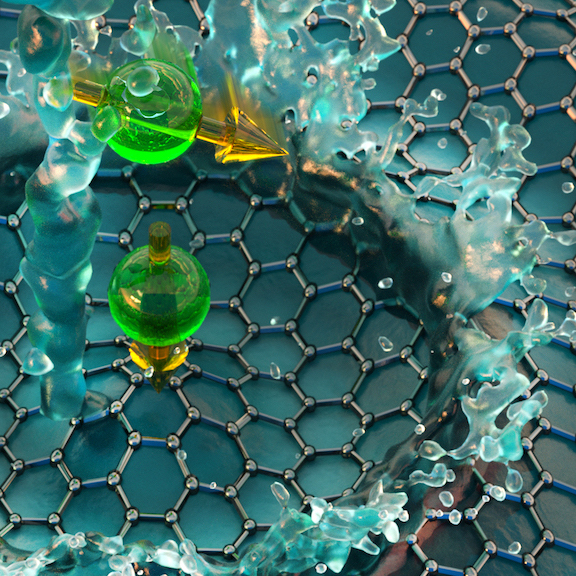

Repository of Open Source Course Modules
The Embedded EthiCS approach builds short ethics modules into computer science courses in the core computer science curriculum.

identify ethical and social issues

reason through ethical and social issues

communicate your reasoned position

design ethically and socially responsible systems
| Course | CS Area | Module | Module Author | |
|---|---|---|---|---|
| CS 134: Networks | Upper-level undergraduate | Facebook, Fake News, and the Ethics of Censorship | David Gray Grant | |
| ENG-SCI 28: Technology, Ethics, and Society | Upper-level undergraduate | Technology-society linkages as seen through three analytic lenses: risk, inequality, and human dignity | David Gray Grant | |
| CS 181: Intelligent Machines: Perception, Learning, and Uncertainty | Upper-level undergraduate | Machine learning, probabilistic reasoning and decision making in uncertain environments | David Gray Grant |
Legend
Completed module
In progress module